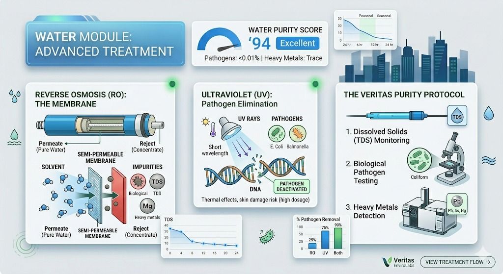
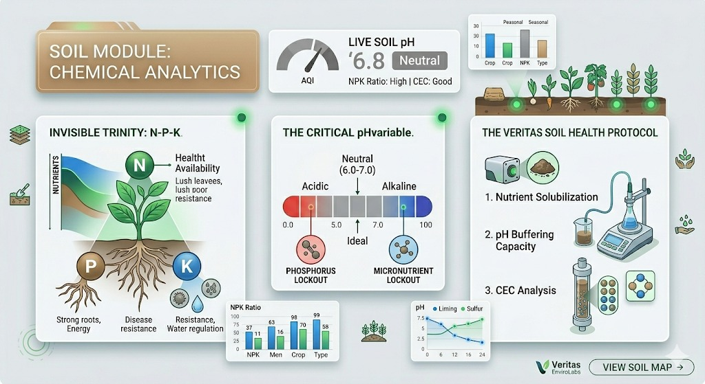
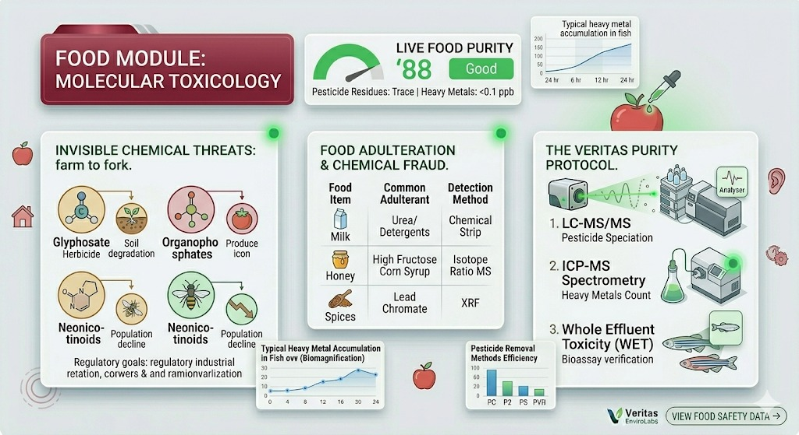
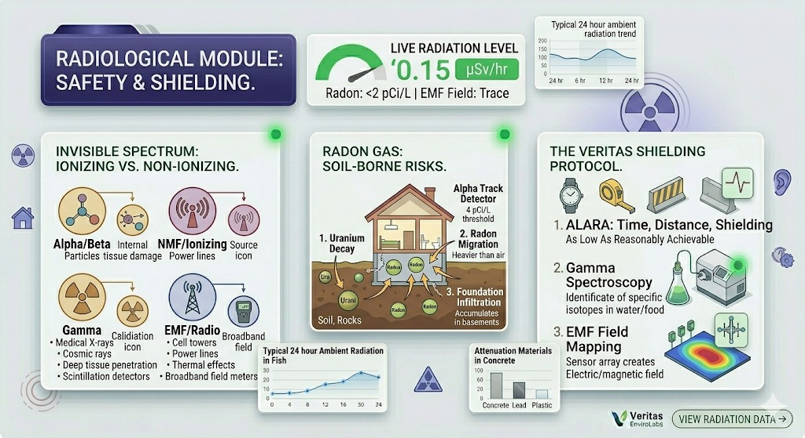
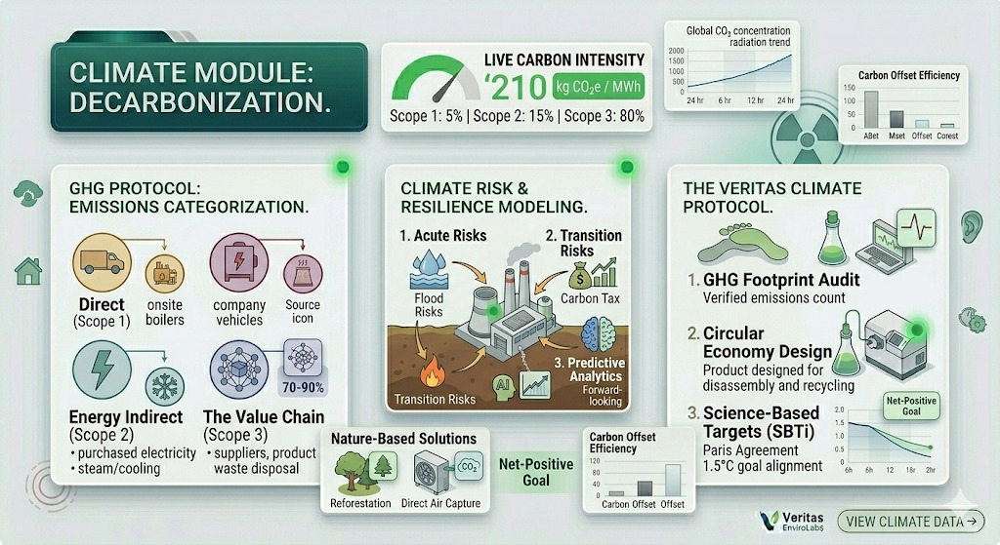
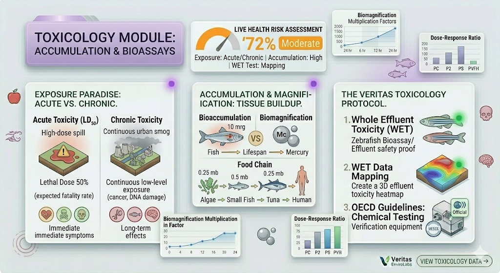
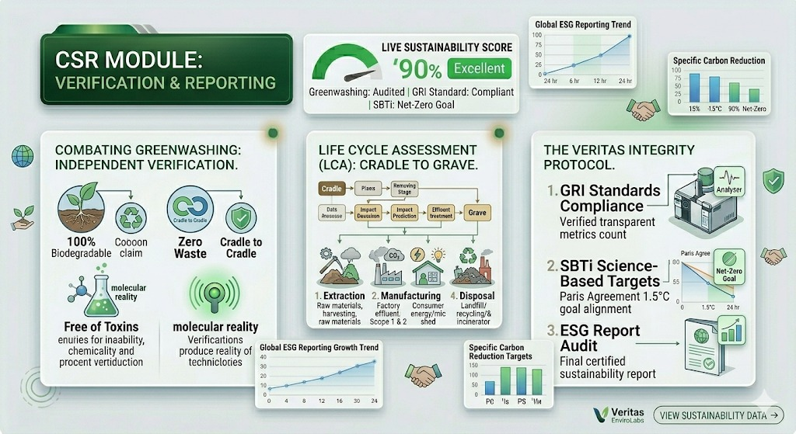
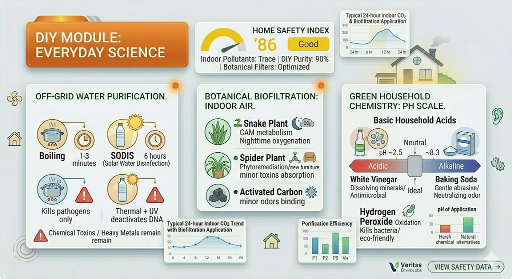

Welcome to Veritas EnviroLabs. We are your premier partner in comprehensive environmental intelligence. By bridging the gap between rigorous scientific analysis and actionable sustainability, we empower communities, industries, and individuals to make informed decisions. From molecular toxicology to smart city integrations, our data-driven approach helps protect both public health and planetary integrity.
Select a module below to access detailed scientific reports, interactive analysis, and legal standards.
Air Quality
PM2.5, VOCs, and urban smog analytics.
Water Purification
RO, UV, and removal of heavy metals.
Soil Health
NPK profiling and crop optimization.
Noise & Vibration
Decibel mapping for industrial zones.
Industrial Audit
Stack monitoring and ETP efficiency.
Residential Safety
Indoor air and toxin checks for homes.
Food Safety Lab
Pesticide residues and adulteration tests.
Radiation Check
Radon gas and EMF detection.
Climate Change
Carbon footprinting and risk modeling.
Smart City IoT
Real-time sensor networks (IoT).
Waste Mgmt
Landfills, recycling, and circular economy.
Marine Biology
Ocean acidity and microplastics.
Toxicology
Bioassays and health risk assessments.
Enviro Law
Legal compliance and treaties.
CSR & ESG
Corporate sustainability reporting.
Home Remedies
DIY purification for air and water.
Lab Equipment
Our advanced machinery (GC-MS, HPLC).
Citizen Report
Report pollution incidents anonymously.
Sources, Standards used here
Get sources links and it details.
Comprehensive Air Quality Analysis
Understanding the invisible threats: Particulates, Gases, and Health.
Introduction to Atmospheric Science
The air we breathe is a complex mixture of gases and particles. While Nitrogen (78%) and Oxygen (21%) make up the bulk, it is the remaining 1% of trace gases and particulate matter that defines air quality.
1. Particulate Matter: The Silent Killer
Particulate Matter (PM) is categorized by size, not chemical makeup.
Nitrogen Dioxide (NO2): Emitted by diesel engines. A precursor to acid rain.
Ground-Level Ozone (O3): Created by chemical reactions between NOx and VOCs in sunlight.
3. The Veritas Testing Protocol
Laser Nephelometry: Real-time detection of PM2.5 spikes.
Gravimetric Analysis: Filter-based mass measurement for government compliance.
Chemical Speciation: Dissolving dust to check for heavy metals like Lead (Pb).
Advanced Water Purification Technologies
Ensuring potability through chemistry, filtration, and physics.
The Essence of Life: Water is the universal solvent, making it easily contaminated. We analyze surface water, groundwater, and municipal supplies to ensure safety.
1. Common Contaminants
Biological Pathogens: E. Coli, Salmonella.
Dissolved Solids (TDS): High TDS can cause kidney stones.
Heavy Metals: Lead, Arsenic, Mercury.
2. Purification Technologies
A. Reverse Osmosis (RO)
Reverse Osmosis forces water through a semi-permeable membrane and is best for high-TDS water. Commonly called RO, it is one of the oldest techniques used in the purification of seawater. It refers to the movement of solvent from a region of high concentration of solute to a region of low concentration of solute or pure solvent through a semipermeable membrane.
What is Reverse Osmosis? When a hydrostatic pressure (greater than the osmotic pressure) is applied on the higher concentration side, solvent molecules start moving from the higher concentration side to the lower concentration side through the semipermeable membrane (SPM). This process is called Reverse osmosis.
B. Ultraviolet (UV) Disinfection
UV rays or light is a type of electromagnetic radiation that belongs to the electromagnetic spectrum. The wavelength of UV light is shorter than the wavelength of visible light, so the UV light is not visible to human beings with the naked eye. The property of UV rays is their ability to cause chemical reactions. They are used in various applications, such as disinfecting water by damaging pathogen DNA and curing certain materials. While effective for low-TDS water with biological risks, UV rays can be harmful, potentially resulting in skin aging and an increased risk of skin cancer.
3. Household Testing Steps
Smell Test: Rotten egg smell = Hydrogen Sulfide.
Turbidity: Cloudy water that doesn't clear is sediment.
To purify water at home, boiling, chlorination, and using water filters are effective methods. Boiling kills germs, adding chlorine disinfects, and filters remove contaminants, ensuring safe drinking water (Source: Centers for Disease Control and Prevention, hopeforce.org).
Water Purification Methods Summary
Method
Effectiveness
Key Steps
Boiling
Kills germs
Boil for 1-3 minutes, cool, store properly.
Chlorination
Disinfects water
Add bleach (8 drops/gallon for clear water), wait 30 minutes.
Water Filters
Removes contaminants
Choose appropriate filter type (Straw, Pump, Gravity) for needs.

Soil Health & Agricultural Optimization
Unlocking the chemical secrets beneath our feet.
1. The N-P-K Trinity
Plants require three primary macronutrients:
Nitrogen (N): Essential for vegetative growth and lush leaf development.
Phosphorus (P): Critical for root development, flowering, and energy transfer.
Potassium (K): Enhances disease resistance and regulates water movement within the plant.
2. The Critical Role of pH
Soil pH acts as a nutrient gatekeeper; acidic soil often locks out Phosphorus, while alkaline soil can lock out essential micronutrients. Maintaining soil health is the bedrock of sustainable agriculture. While many factors contribute to a thriving ecosystem, Soil pH is often considered the "master variable" because it controls the chemical environment of the roots.
The Role of pH in Soil Health
Nutrient Availability: pH determines whether essential minerals are soluble. In highly acidic soils, vital nutrients like phosphorus become "locked" and unavailable to plants.
Microbial Activity: Beneficial bacteria that decompose organic matter thrive in near-neutral pH (6.0 to 7.0).
Toxicity Prevention: At low pH (below 5.5), aluminum and manganese can become soluble at toxic levels, stunting root growth.
Fertilizer Efficiency: If pH is off, applying fertilizer is often a waste of money, as the plant cannot physically absorb the nutrients provided.
Cation Exchange Capacity (CEC): pH levels influence the soil's ability to hold onto positively charged nutrients like calcium and magnesium.
Key Points on Soil Health & Optimization
Soil Structure: Healthy soil has good "tilth," meaning it is porous enough for air and water movement.
Organic Matter: This is the "soul" of the soil, improving water retention and feeding the microbiome.
The Ideal Range: Most crops prefer a pH between 6.0 and 7.5.
Liming: Adding agricultural lime is the standard method to raise the pH of acidic soils.
Sulfur Application: Elemental sulfur or aluminum sulfate is used to lower the pH of alkaline soils.
Microbiome Diversity: A healthy soil contains billions of fungi, bacteria, and protozoa per teaspoon.
Water Infiltration: Optimized soil prevents runoff and erosion by absorbing rainfall effectively.
Carbon Sequestration: Healthy soils act as a "sink," pulling CO2 from the atmosphere into the ground.
Crop Rotation: Changing crops annually breaks pest cycles and prevents specific nutrient depletion.
Cover Cropping: Planting "green manure" protects the soil surface and adds nitrogen.
Nitrogen Fixation: Legumes work with Rhizobium bacteria to turn atmospheric nitrogen into plant food.
Salinity Management: Excess salts can dehydrate plants; proper drainage and pH balance help mitigate this.
Compaction Issues: Heavy machinery squeezes out air pockets, suffocating roots and microbes.
Precision Agriculture: Using GPS and sensors to apply lime and fertilizer only where needed.
Soil Testing: Regular lab analysis is the only way to accurately manage pH and nutrient levels.
Cation Balance: Balancing the ratio of Calcium, Magnesium, and Potassium is vital for plant cell strength.
Erosion Control: Roots and organic mulch act as an anchor against wind and water.
Earthworm Populations: Their presence is a primary indicator of high-quality, aerated soil.
Root Exudates: Plants "leak" sugars into the soil to feed beneficial microbes in the rhizosphere.
Nutrient Cycling: The continuous movement of nutrients from organic form to mineral form.
Buffering Capacity: The soil's ability to resist changes in pH, largely dictated by clay and organic content.
Biochar: Adding charred biomass can improve long-term carbon storage and pH stability.
Integrated Pest Management (IPM): Healthy plants in optimized soil are naturally more resistant to insects.
Mycorrhizal Fungi: These extend the root system's reach, specifically helping with phosphorus uptake.
Humus Formation: The stable, long-lasting part of organic matter that gives soil its dark color.
Leaching Prevention: Proper pH and organic levels keep nitrates from washing into groundwater.
Trace Elements: pH controls the "micro" nutrients like Zinc, Iron, and Boron.
Resilience to Drought: High organic matter allows soil to hold more water for longer periods.
Sustainable Yields: Optimization ensures the land remains productive for future generations.
3. Soil Texture
We analyze the percentage of Sand, Silt, and Clay to determine irrigation strategies and water retention capabilities.

Noise & Vibration Analytics
Quantifying the acoustic environment for health and structural integrity.
Noise pollution is the second largest environmental cause of health problems, following air quality. It is defined as unwanted or harmful outdoor sound created by human activities, including transport, road traffic, rail traffic, air traffic, and industrial activity.
1. Physics of Sound & Vibration
Understanding sound requires looking at it as a mechanical wave that travels through mediums (air, water, solids).
Frequency (Hz): Determines the pitch. Low-frequency sounds (20Hz – 250Hz) have long wavelengths that penetrate heavy walls and soil easily, making them harder to block than high-frequency sounds.
Amplitude (dB): Measures loudness on a logarithmic scale. A 10dB increase represents a tenfold increase in sound intensity and a perceived doubling of loudness.
Resonance: Occurs when a vibration matches the natural frequency of an object, potentially leading to structural damage or amplified noise levels.
2. The Decibel Scale & Safety Thresholds
Because the decibel (dB) scale is logarithmic, small numerical changes represent significant physical differences. The human ear's sensitivity is typically measured using "A-weighting" (dBA).
Sound Level
Example Source
Impact
30 dB
Whisper / Quiet Library
Ideal for sleep and concentration.
60 dB
Normal Conversation
Comfortable for daytime activity.
85 dB
Heavy Traffic / Power Tools
Threshold for potential hearing damage (8+ hours).
120 dB
Jet Takeoff / Siren
Threshold of pain; immediate risk of damage.
3. Health & Psychological Impacts
Chronic exposure to noise above 65dB acts as a physiological stressor. It triggers the release of stress hormones like cortisol and adrenaline, even when the person is asleep.
Cardiovascular Health: Sustained noise leads to hypertension, increased heart rate, and elevated risk of ischemic heart disease.
Sleep Disturbance: Fragmented sleep prevents the body from entering deep REM cycles, leading to cognitive decline and irritability.
Tinnitus: Persistent ringing in the ears caused by damage to the fine hair cells (cilia) within the cochlea.
4. Mitigation & Control Strategies
Effective noise management follows a structured "Hierarchy of Control" that prioritizes fixing the problem at the origin rather than just protecting the listener. This approach ensures long-term environmental health rather than temporary relief.
Source Control (Most Effective): This involves engineering the noise out of the environment. Examples include regular maintenance of industrial machinery to prevent friction-based squealing, using "quiet" rubber compounds for vehicle tires, and installing vibration isolators or rubber mounts to decouple heavy motors from the building's structure.
Path Mitigation: If the source cannot be silenced, the sound path must be interrupted. This is achieved by installing acoustic barriers (noise walls), using high-density sound-absorbing insulation like rockwool, and utilizing double-glazed or laminated windows to break the transmission of sound waves before they enter a living space.
Receiver Protection (Last Resort): When engineering and path controls are insufficient, the individual must be protected. This includes personal protective equipment (PPE) like silicone earplugs or advanced Active Noise-Canceling (ANC) technology, which generates "anti-noise" waves to phase out incoming sound.
5. Vibration Analytics
Vibration is technically "structure-borne" noise—energy that travels through solids (soil, steel, concrete) rather than air. Analytics in this field focus on Peak Particle Velocity (PPV), which measures the maximum speed of a soil or structural particle as it vibrates.
Monitoring PPV is critical in construction and mining to ensure that heavy blasting or pile-driving does not reach frequencies that cause resonance in nearby residential foundations, which can lead to hairline fractures. Additionally, vibration analytics are used to protect "sensitive receivers" like laboratory electron microscopes, which can be rendered useless by even microscopic floor tremors.
Navigating the intersection of industrial productivity and environmental law.
Overview of Industrial Environmental Compliance
Industrial environmental compliance is the mandatory adherence to laws, regulations, and standards designed to minimize the ecological footprint of business operations. It ensures that industries operate responsibly, reducing pollution and conserving natural resources to protect both the ecosystem and public health.
Key Aspects of Compliance
Regulatory Framework: Guidance provided by overlapping federal, state, and local environmental authorities.
Environmental Impact: Focused strategies for reducing carbon footprints, chemical runoff, and resource depletion.
Public Health: The primary goal of ensuring that air and water remains safe for human consumption and activity.
Major Regulatory Acts
Modern compliance is built upon several foundational pieces of legislation that govern how industries interact with the environment:
Regulation
Primary Purpose
Clean Air Act (CAA)
Regulates air emissions from stationary and mobile sources.
Clean Water Act (CWA)
Governs the discharge of pollutants into navigable waters.
RCRA
Manages the "cradle-to-grave" disposal of hazardous waste.
CERCLA (Superfund)
Addresses the cleanup and liability for hazardous substance releases.
Core Compliance Areas
Industries must monitor and report data across four primary environmental pillars:
Air Quality: Installing scrubbers and sensors to monitor and control industrial emissions.
Water Quality: Implementing on-site wastewater treatment plants to ensure discharge meets safe standards.
Waste Management: Rigorous protocols for the identification, storage, and recycling of industrial byproducts.
Resource Conservation: Auditing energy and material use to optimize efficiency and reduce waste.
Business Benefits & Strategies
While compliance is a legal obligation, it also offers significant competitive advantages. Companies that act ethically toward the environment often see increased market demand and long-term cost savings through efficient resource use.
Risk Mitigation: Proactive audits prevent environmental incidents that could lead to massive fines.
Reputation Enhancement: Builds stakeholder trust by proving commitment to corporate social responsibility (CSR).
Navigating the intricate web of evolving environmental laws remains a significant hurdle. High initial investment costs and the constant change in global standards require dedicated environmental management systems (EMS) to maintain operational continuity.
Conclusion: Industrial compliance is not just about avoiding penalties; it is a critical component of sustainable business practices that ensure the longevity of both the company and the planet.
Residential Habitation Safety
Ensuring healthy indoor environments through air, water, and material analytics.
1. Sick Building Syndrome (SBS) & Indoor Air Quality
Sick Building Syndrome (SBS) describes a situation where occupants experience acute health effects that appear to be linked to time spent in a building, but no specific illness or cause can be identified. These symptoms typically disappear after leaving the premises.
Common Indoor Pollutants
Volatile Organic Compounds (VOCs): Emitted as gases from certain solids or liquids, including Formaldehyde from new furniture, carpets, and pressed-wood products.
Biological Contaminants: Mold spores, pollen, and bacteria thrive in humid environments or poorly maintained HVAC systems, leading to respiratory distress.
Carbon Dioxide (CO2) Buildup: High concentrations of CO2 in poorly ventilated spaces cause "stuffy air," leading to headaches, fatigue, and reduced cognitive function.
2. Habitability Certificate: The Scoring System
A Habitability Certificate is a formal document verifying that a residential unit meets specific environmental health standards. We use a 100-point weighted scale to determine the safety of the living space:
Air Quality (30 pts): Measurement of Particulate Matter (PM2.5 and PM10), VOC levels, and the Air Exchange Rate (ACH) to ensure sufficient ventilation.
Water Quality (30 pts): A comprehensive purity check for bacterial pathogens (Coliform), dissolved solids (TDS), and residual chlorine levels.
Toxicology & Materials (20 pts): Inspection for legacy hazards such as Lead-based paint, friable Asbestos in insulation, and Radon gas seepage from the foundation.
Acoustics & Lighting (20 pts): Assessment of ambient noise levels (decibels) and access to natural light/UV, which are critical for circadian health.
3. Key Safety Thresholds
Parameter
Safety Limit
Health Impact
CO2 Levels
< 1000 ppm
Prevents drowsiness and headaches.
Humidity
30% – 50%
Suppresses mold growth and dust mites.
PM2.5
< 12 µg/m³
Reduces long-term cardiovascular risk.
4. Preventive Measures for Residents
Maintaining a safe habitation zone requires consistent monitoring and simple behavioral changes:
Source Removal: Avoid smoking indoors and opt for "Low-VOC" paints and sealants during renovations.
Enhanced Ventilation: Use HEPA-filtered air purifiers and ensure exhaust fans in kitchens and bathrooms are vented to the outside to prevent moisture buildup.
Biophilic Cleansing: While not a total solution, certain indoor plants like the Snake Plant or Peace Lily can help supplement air filtration of minor toxins.
Note: Habitability audits should be performed annually or after any significant structural renovation to ensure ongoing safety compliance.
Food Safety & Molecular Toxicology
Advanced screening for chemical purity and biological integrity in nutrition.
The Global Food Challenge: In an increasingly industrialised food system, the journey from farm to fork is fraught with potential contamination. Our lab specializes in identifying invisible chemical threats that pose long-term risks to human health.
1. Pesticide Residue Analysis
Modern agriculture relies on synthetic chemicals. We use LC-MS/MS (Liquid Chromatography-Mass Spectrometry) to detect residues even at parts per billion (ppb) levels.
Glyphosate: The world's most common herbicide, linked to soil degradation and potential health risks.
Organophosphates: Potent neurotoxins used in fruit and vegetable farming.
Neonicotinoids: Pesticides that impact bee populations and enter the human food chain through honey and produce.
2. Adulteration & Chemical Fraud
Food fraud is a billion-dollar issue. We perform molecular "fingerprinting" to ensure what you see on the label is what is in the package.
Food Item
Common Adulterant
Detection Method
Milk
Urea, Detergents, Starch
Chemical Strip Testing
Honey
High Fructose Corn Syrup
Isotope Ratio Mass Spectrometry
Spices
Lead Chromate, Sudun Dyes
X-Ray Fluorescence (XRF)
3. Bioaccumulation & Heavy Metals
Heavy metals do not break down; they move up the food chain, becoming more concentrated in a process called Biomagnification.
Mercury (Hg): High concentrations in large predatory fish like Tuna and Swordfish.
Cadmium (Cd): Often found in leafy greens and grains grown in phosphate-fertilized soils.
Arsenic (As): A major concern in rice cultivation due to groundwater irrigation patterns.
4. Our Compliance Standards
We strictly adhere to the Codex Alimentarius (International Food Standards) and regional FDA/FSSAI mandates to provide legally defensible safety reports for producers and consumers alike.

Radiological Safety & Shielding
Monitoring ionizing and non-ionizing radiation for human health and hardware integrity.
The Invisible Spectrum: Radiation is energy traveling through space. While some forms are harmless, others can strip electrons from atoms (ionizing radiation), leading to cellular damage and genetic mutations.
1. Radon Gas: The Soil-Borne Risk
Radon is a colorless, odorless radioactive gas produced by the natural decay of uranium in soil and rocks. It is the leading cause of lung cancer among non-smokers.
Because Radon is heavier than air, it accumulates in basements and crawl spaces through foundation cracks. We use Alpha Track Detectors to monitor long-term exposure levels. The safety threshold is strictly 4 pCi/L; levels exceeding this require active sub-slab suction mitigation.
2. Ionizing vs. Non-Ionizing Radiation
Our lab distinguishes between high-energy particles and electromagnetic fields (EMF) to provide a full-spectrum safety audit.
Type
Source
Risk & Monitoring
Alpha/Beta Particles
Soil, Industrial isotopes
Internal tissue damage; Geiger counters
Gamma Rays
Medical X-rays, Cosmic rays
Deep tissue penetration; Scintillation detectors
EMF / Radio
Cell towers, Power lines
Thermal effects; Broadband field meters
3. Shielding Principles (ALARA)
We follow the ALARA principle: As Low As Reasonably Achievable. Safety is managed through three primary variables:
Time: Reducing the duration of exposure.
Distance: Doubling the distance from a source reduces exposure by a factor of four (Inverse Square Law).
Shielding: Utilizing Lead (for Gamma), Plastic/Acrylic (for Beta), or Concrete to absorb energy.
4. Environmental Isotope Analysis
Veritas EnviroLabs uses Gamma Spectroscopy to identify specific isotopes in water or food samples, ensuring that fallout or industrial leaks are detected before they enter the local ecosystem.

Climate Intelligence & Strategy
Beyond compliance: Decarbonizing operations for a resilient future.
The Climate Mandate: Climate change is no longer a distant projection—it is a current operational reality. We help organizations transition from being part of the problem to becoming leaders in the low-carbon economy.
1. Carbon Footprint Auditing (GHG Protocol)
To reduce what we emit, we must first measure it with scientific precision. We categorize emissions into three distinct "Scopes" to identify exactly where carbon leakages occur in your business model.
🟢 Scope 1: Direct Emissions Emissions from sources you own or control directly (e.g., company vehicles, onsite boilers).
🔵 Scope 2: Energy Indirect Emissions from the generation of purchased electricity, steam, or cooling used in your facilities.
🟠 Scope 3: The Value Chain The most complex category—emissions from suppliers, product use, and waste disposal. This often represents 70-90% of a company's total footprint.
2. Risk Modeling & Physical Resilience
Climate strategy isn't just about emissions; it's about survival. We use Predictive Analytics to model how changing weather patterns will affect your specific geography.
Acute Risks: Modeling the impact of extreme weather events (floods, wildfires) on infrastructure.
Transition Risks: Preparing for the economic shift as carbon taxes and "Green Mandates" become legal requirements.
3. The Human Element: Mitigation Strategies
We believe technology is only half the battle. True climate strategy requires a shift in human behavior and organizational culture.
Strategy
The "Human" Impact
Goal
Energy Efficiency
Reducing waste through smart habits and IoT.
Lower Scopes 1 & 2
Circular Economy
Designing out waste; repairing vs. replacing.
Zero-Waste Goal
Regenerative Sourcing
Partnering with suppliers who restore ecosystems.
Net-Positive Impact
4. Carbon Sequestration & Offsetting
For emissions that cannot be eliminated yet, we identify high-quality Nature-Based Solutions (like reforestation) and Direct Air Capture (DAC) technologies to balance the atmospheric scales.

Smart City IoT & Digital Twins
Deploying the urban nervous system for real-time environmental responsiveness.
The Living City: A Smart City isn't just about automation; it's about awareness. By embedding intelligence into the physical world, we transform static infrastructure into a dynamic, responsive ecosystem that protects its citizens.
1. Distributed Sensor Architecture
We utilize LPWAN (Low-Power Wide-Area Network) technology to connect thousands of low-cost, high-precision sensors across the urban landscape. These nodes operate in a Mesh Network, ensuring that if one node fails, the data path automatically reroutes.
📡 Air Quality Nodes
Real-time PM2.5 and NO2 heatmaps to divert traffic from high-pollution zones.
💧 Smart Water Grids
Acoustic leak detection and real-time pH monitoring in municipal reservoirs.
2. AI-Driven Predictive Analytics
Data is useless without insight. Our AI engine processes billions of data points to create a Digital Twin of the city, allowing us to simulate environmental scenarios before they happen.
Smog Forecasting: Combining wind patterns, humidity, and traffic data to predict smog events 48 hours in advance.
Acoustic Event Detection: Identifying industrial noise spikes or structural vibrations in heritage buildings in real-time.
Urban Heat Island Mitigation: Using thermal sensors to trigger automated irrigation and "green cooling" systems.
3. Data Sovereignty & Citizen Access
We believe environmental data belongs to the people. Our IoT framework includes an open-access API for developers and a Citizen Dashboard for real-time local updates.
Component
Technology
Benefit
Connectivity
LoRaWAN / 5G
Massive device density
Processing
Edge Computing
Ultra-low latency response
Storage
Blockchain Ledger
Immutable environmental records
4. Future-Proofing Urban Spaces
Veritas IoT solutions are designed to be modular. As new threats emerge—from microplastics to novel pathogens—our sensor architecture can be updated over-the-air (OTA) to keep the city safe and informed.
Waste Management & Resource Recovery
Transforming urban refuse into sustainable energy and circular materials.
The End of "Away": When we throw something away, there is no magical "away." Every piece of refuse must go somewhere. Our goal is to shift communities from a linear "Take-Make-Dispose" model to a closed-loop system where today's waste becomes tomorrow's raw material.
1. The Anatomy of an Engineered Landfill
Modern landfills are not simply "dumps." They are highly complex, strictly regulated biochemical reactors designed to isolate toxins from the surrounding environment and protect local groundwater.
Leachate Collection: As rainwater filters through rotting trash, it creates a toxic "garbage tea" called leachate. We use HDPE (plastic) liners and drainage pipes to capture and treat this before it reaches aquifers.
Landfill Gas (LFG) Extraction: Anaerobic bacteria break down organic waste, producing a mix of Methane (CH4) and Carbon Dioxide (CO2). We capture this gas and burn it in generators to power nearby homes.
2. Waste Characterization & "Sort Studies"
You cannot manage what you don't measure. We conduct rigorous physical sorting of municipal solid waste (MSW) to determine its composition, allowing cities to optimize their recycling and recovery programs.
Waste Stream
Processing Method
Value Recovered
🍏 Wet Organics (Food/Yard)
Anaerobic Digestion / Composting
Biogas, Nutrient-rich fertilizer
📦 Dry Recyclables (Paper/PET)
Material Recovery Facility (MRF)
Post-Consumer Resin (PCR), Pulp
🔥 Combustible Rejects
Refuse Derived Fuel (RDF)
Thermal energy for cement kilns
3. The Circular Economy Paradigm
Recycling is good, but Circular Design is better. True waste management begins at the manufacturing stage. We audit supply chains to ensure products are designed for disassembly, repairability, and infinite recycling loops.
4. Electronic & Hazardous Waste (E-Waste)
The fastest-growing waste stream globally. A single lithium-ion battery improperly disposed of can spark catastrophic landfill fires, and heavy metals (lead, cadmium) from old circuit boards can cause severe neurological damage if they enter the water supply. We mandate specialized hydrometallurgical recycling to safely extract rare earth elements from dead electronics.
Marine Ecosystems & Blue Health
Monitoring the planetary lungs: Acidification, plastics, and water chemistry.
The Blue Heart of the Planet: The ocean covers 70% of the Earth, regulates our climate, and provides the primary protein source for over 3 billion people. Yet, it operates as the ultimate sink for human pollution. Our lab tracks these invisible changes before they collapse critical aquatic food webs.
1. Ocean Acidification: The "Other" CO₂ Problem
While most focus on CO₂ trapping heat in the atmosphere, about 30% of global carbon emissions are absorbed directly by the ocean. This fundamentally alters marine chemistry by creating Carbonic Acid, lowering the water's pH.
The Calcification Crisis: Lower pH depletes carbonate ions—the exact building blocks marine life needs to survive. Organisms like oysters, clams, sea urchins, and the foundational coral reefs are literally dissolving faster than they can grow their shells.
2. Microplastics & Nanoplastics
Plastic never truly breaks down; it only breaks apart. Microplastics (less than 5mm) are now found in the deepest ocean trenches and inside human bloodstreams. They act as microscopic sponges, absorbing other toxic chemicals from the water.
Polymer Type
Common Source
Lab Detection Method
Microfibers (Polyester/Nylon)
Synthetic clothing washed in domestic washing machines.
Tissue Digestion + FTIR Spectroscopy
Polyethylene (PE)
Degraded single-use grocery bags and packaging.
Raman Spectroscopy
Nylon-6 (Ghost Nets)
Abandoned commercial fishing gear.
Visual sorting + Chemical Assay
3. Eutrophication & Hypoxic "Dead Zones"
What happens on land doesn't stay on land. When excess nitrogen and phosphorus from agricultural fertilizer wash into rivers and eventually the sea, they trigger massive, unnatural explosions of algae.
The Algal Bloom: Sunlight is blocked, killing deep-water plants.
Oxygen Depletion: When the massive algal bloom dies, bacteria consume it. These bacteria use up nearly all the dissolved oxygen in the water.
The Dead Zone: The water becomes hypoxic (lacking oxygen). Any marine life that cannot swim away fast enough suffocates. We use continuous dissolved oxygen (DO) sensors to map these expanding hazard zones.
Toxicology & Health Risk
Quantifying chemical hazards to protect human health and ecological integrity.
"All things are poison, and nothing is without poison; the dosage alone makes it so a thing is not a poison." — Paracelsus (1538)
The Science of Safety: Toxicology is not just about finding poisons; it is about establishing boundaries. Every chemical, from arsenic to drinking water, has a threshold where it becomes harmful. Our lab determines these exact limits to ensure the air you breathe and the products you use are safe.
1. The Exposure Paradigm: Acute vs. Chronic
Toxicity is measured across two entirely different timelines. A chemical that is harmless in a single dose might be deadly if exposed to it every day for a decade.
⚠️ Acute Toxicity
The Scenario: A single, high-dose exposure (e.g., an industrial chemical spill or inhaling toxic fumes during a fire).
The Metric (LD₅₀): The "Lethal Dose 50%". This is the statistically derived dose at which a chemical is expected to be fatal to 50% of a test population. It helps us classify immediate chemical hazards.
⏳ Chronic Toxicity
The Scenario: Continuous, low-level exposure over months or years (e.g., breathing daily urban smog or drinking trace amounts of lead).
The Metric: We look for systemic effects like carcinogenesis (cancer), mutagenesis (DNA damage), or endocrine disruption (hormone interference).
2. Accumulation & Magnification
Chemicals behave differently once they enter a living organism. Understanding how they build up is critical for setting food and water safety standards.
Bioaccumulation: Occurs within a single organism. If a fish takes in a toxin (like mercury) faster than its liver can process and excrete it, the toxin builds up in its tissues over its lifetime.
Biomagnification: Occurs across the entire food chain. An algae absorbs a tiny bit of toxin. A small fish eats 1,000 algae. A tuna eats 1,000 small fish. By the time a human eats the tuna, the toxin concentration has multiplied millions of times.
3. Ecotoxicology: The 96-Hour Fish Bioassay
Before an industrial plant is legally allowed to discharge treated wastewater (effluent) into a river, it must pass a biological reality check. Chemical tests alone cannot predict how mixed toxins interact.
We perform WET (Whole Effluent Toxicity) testing using indicator species like Zebrafish or Fathead Minnows. By observing their survival, growth, and reproduction rates in various concentrations of the effluent over 96 hours, we can definitively prove whether the water is safe to return to nature.
4. Human Health Risk Assessment (HHRA)
How do we turn lab data into public safety laws? We use a structured, four-step scientific framework to advise governments and corporations:
Step
Process
The Question Answered
1. Hazard ID
Reviewing chemical properties
Can this chemical harm humans?
2. Dose-Response
Finding the "No Effect Level" (NOAEL)
At what exact dose does the harm begin?
3. Exposure Assessment
Analyzing community contact routes
How much are people actually inhaling or eating?
4. Risk Characterization
Combining all data into a safety threshold
Is the current community risk acceptable?

Environmental Law & Liability
Translating scientific data into legal accountability and corporate compliance.
Science Meets Accountability: Environmental law is the mechanism by which society protects its shared resources. Our laboratory provides the rigorous, defensible data required by courts, regulatory agencies, and corporations to determine liability and enforce compliance.
1. The "Polluter Pays" Principle
This is the foundational pillar of international environmental law. It dictates that the entity responsible for producing pollution must bear the financial burden of cleaning it up, rather than passing the cost onto the taxpayer or local community.
Legal Defensibility: In a court of law, data is constantly challenged. Veritas EnviroLabs maintains strict Chain of Custody (CoC) protocols for all samples. From the moment a water sample is drawn to the moment it is analyzed in the spectrometer, its location, handler, and temperature are legally documented.
2. Environmental Impact Assessments (EIA)
Before a shovel ever hits the ground for a new factory, highway, or mine, a massive legal and scientific document must be approved. The EIA is designed to predict environmental consequences before they happen.
EIA Phase
Our Lab's Role
1. Baseline Study
Documenting the current state of the air, water, and soil before any construction begins.
2. Impact Prediction
Using modeling software to predict how the project will alter local noise levels, water tables, or air quality.
3. Mitigation Plan
Designing engineering solutions (like noise barriers or effluent treatment plants) to neutralize the predicted impacts.
When an illegal chemical dump or an offshore oil spill occurs, perpetrators often deny involvement. Environmental forensics allows us to act as ecological crime scene investigators.
[Image of isotopic fingerprinting matching an oil spill sample to a specific cargo ship]
Chemical Fingerprinting: Every batch of crude oil or industrial chemical has a unique ratio of stable isotopes (like Carbon-12 vs. Carbon-13).
The Match: By analyzing a sample from an oil slick on a beach, we can match its specific "fingerprint" directly to the fuel tanks of a specific ship passing through the area, proving liability beyond a reasonable doubt.
4. Navigating Global Treaties
We help multinational corporations ensure their supply chains do not violate international agreements, such as:
The Basel Convention: Preventing the illegal export of hazardous E-Waste to developing nations.
The Minamata Convention: Ensuring total phase-outs of mercury usage in industrial processes.
The Montreal Protocol: Auditing HVAC and refrigeration systems to ensure zero leakage of ozone-depleting substances (CFCs and HCFCs).
CSR, ESG & Corporate Integrity
Moving beyond promises: Verifying corporate impact through hard science.
The Era of Accountability: Modern consumers, employees, and investors no longer accept vague promises of "going green." True Corporate Social Responsibility (CSR) and Environmental, Social, and Governance (ESG) mandates require empirical proof. Our lab provides the scientific backbone to your sustainability claims.
1. Combating "Greenwashing"
Greenwashing occurs when a company spends more time and money marketing itself as environmentally friendly than actually minimizing its environmental impact. We act as the independent, third-party auditor to verify your brand's claims.
The Verification Process: If your product claims to be "100% Biodegradable," "Zero Waste," or "Free of Toxins," our lab tests it against global ASTM and ISO standards. We don't just read the label; we analyze the molecular reality, giving your brand unshakeable scientific credibility.
2. Life Cycle Assessment (LCA)
To understand the true environmental cost of a product, you must look far beyond the factory floor. We conduct comprehensive LCAs to track environmental impacts from "Cradle to Grave"—and increasingly, "Cradle to Cradle" (circular recycling).
LCA Phase
What We Measure
1. Extraction (Cradle)
Ecological damage, water usage, and energy required to mine, harvest, or synthesize raw materials.
2. Manufacturing
Chemical runoff, effluent toxicity, and the carbon emissions (Scope 1 & 2) generated on the factory floor.
3. Use Phase
The energy the product consumes or the microplastics it sheds while owned by the consumer.
4. Disposal (Grave)
Landfill methane generation, incineration toxic release, or recyclability potential.
3. ESG Reporting & Compliance
Sustainability reports are transitioning from voluntary PR documents to legally mandated financial disclosures. We help translate your operational data into recognized global reporting frameworks:
GRI (Global Reporting Initiative): Ensuring your environmental metrics are transparent, standardized, and globally comparable.
Science Based Targets (SBTi): We help you set carbon reduction goals that actually align with the Paris Agreement's 1.5°C pathway, moving beyond arbitrary corporate goals to math-backed environmental science.

DIY Mitigation & Everyday Science
Practical, science-backed strategies to protect your immediate home environment.
Your First Line of Defense: Environmental intelligence isn't just for multinational corporations and smart cities. According to the EPA, indoor environments can be up to five times more polluted than the outdoors. Here is how you can apply laboratory-grade science using everyday household items.
1. Off-Grid Water Purification
Whether facing a natural disaster or traveling, understanding the physics and biology of water purification is a critical survival skill.
Thermal Disinfection (Boiling): Bringing water to a rolling boil for 1 to 3 minutes physically denatures the proteins of bacteria, viruses, and protozoa, rendering them harmless. Note: Boiling does not remove chemical toxins or heavy metals.
SODIS (Solar Water Disinfection): A WHO-approved method for developing areas. By placing clear PET plastic bottles of water in direct sunlight for 6 hours, the combination of thermal heating and UV-A radiation permanently destroys the DNA of aquatic pathogens.
2. Botanical Biofiltration & Indoor Air
Modern homes are tightly sealed for energy efficiency, which traps Volatile Organic Compounds (VOCs) off-gassing from paint, furniture, and cleaning supplies. We can combat this using natural biofilters.
Bio-Filter
Scientific Mechanism
Best Use Case
🐍 Snake Plant (Sansevieria)
Utilizes CAM (Crassulacean Acid Metabolism) to absorb CO₂ and release oxygen specifically at night.
Bedrooms (for nighttime oxygenation).
🕷️ Spider Plant (Chlorophytum)
Highly effective at phytoremediation—absorbing Formaldehyde and Xylene through its leaves.
Living rooms or near newly assembled furniture.
⚫ Activated Carbon (Charcoal)
Millions of microscopic pores trap gas molecules via adsorption (chemical binding to the surface).
Near trash cans, litter boxes, or damp areas.
3. Green Household Chemistry
Many commercial cleaning products contain harsh synthetic chemicals that trigger asthma and degrade indoor air quality. You can replace them by understanding basic acid-base chemistry.
White Vinegar (Acetic Acid - pH ~2.5): The mild acidity dissolves mineral deposits (hard water stains) and is inherently antimicrobial, making it an excellent glass and surface cleaner.
Baking Soda (Sodium Bicarbonate - pH ~8.3): A mild alkaline compound that acts as a gentle abrasive. It neutralizes acidic odor molecules, turning them into odorless salts.
Hydrogen Peroxide (H₂O₂): An eco-friendly alternative to chlorine bleach. It kills bacteria through oxidation (destroying cell walls) and safely breaks down into plain water and oxygen.

Advanced Analytical Equipment
The arsenal of truth: Demystifying the machines that quantify our environment.
We Don't Guess; We Quantify: In environmental science, you cannot manage what you cannot measure. Our laboratory relies on a suite of state-of-the-art analytical instruments designed to find needles in planetary-sized haystacks. Here is a look inside our testing facility.
1. GC-MS (Gas Chromatography-Mass Spectrometry)
The GC-MS is the gold standard for identifying volatile organic compounds (VOCs) in air and soil. It works in two distinct steps: a "Molecular Sieve" and a "Shatter Scale."
[Image of gas chromatography mass spectrometry diagram showing separation and detection]
The Separation (Gas Chromatography): The sample is vaporized and pushed through a microscopic, coiled tube (often 30 meters long). Smaller, lighter molecules race through quickly, while heavier ones get "stuck" and take longer, separating the mixture into individual ingredients.
The Identification (Mass Spectrometry): As each ingredient exits the tube, an electron beam shatters it into charged fragments. The machine weighs these fragments, creating a unique "molecular fingerprint" that we match against a library of hundreds of thousands of known toxins.
2. ICP-MS (Inductively Coupled Plasma)
When we need to find heavy metals like Lead, Arsenic, or Mercury in drinking water, we turn to the ICP-MS. This machine utilizes extreme, almost unfathomable physics to achieve unmatched sensitivity.
The Plasma Torch: It uses argon gas suspended in an electromagnetic field to create plasma that burns at 10,000 Kelvin—roughly the temperature of the surface of the sun.
Total Atomization: When a water sample is sprayed into this plasma, every chemical bond is instantly obliterated, stripping the sample down to its raw elemental atoms so they can be counted one by one.
Measurement Scale
Real-World Equivalent
ICP-MS Capability
PPM (Parts Per Million)
One drop of water in a standard 50-liter car gas tank.
Effortless baseline detection.
PPB (Parts Per Billion)
One drop of water in an Olympic-sized swimming pool.
Standard operational sensitivity.
PPT (Parts Per Trillion)
One drop of water in twenty Olympic-sized swimming pools.
Maximum threshold for highly toxic metals.
3. HPLC (High-Performance Liquid Chromatography)
Not everything can be vaporized into a gas for the GC-MS. For heavy, heat-sensitive compounds—like pesticide residues on an apple, pharmaceutical runoff in a river, or complex proteins—we use HPLC.
Instead of gas, HPLC uses extremely high pressure (up to 6,000 psi) to force liquid solvents through a densely packed column of silica. This allows us to separate and identify "forever chemicals" (PFAS) and food adulterants without destroying the molecules in the process.
Verified Citizen Reporting
Submit legally actionable environmental intelligence directly to our lab.
Verified Reporting Protocol
To ensure that your report can be used for official investigations and legal action, anonymous tips are no longer accepted. All submissions require valid identity verification and video evidence. Your personal data is encrypted and handled under strict confidentiality laws.
File an Official Incident Report
Global Sources & Legal Standards
The international frameworks, treaties, and scientific authorities guiding our analytics.
Veritas EnviroLabs operates in strict accordance with the following global scientific, legal, and environmental mandates. Transparency and traceability are the foundations of our intelligence.
💨 Air Quality & Smog
Metrics: PM2.5, PM10, NO2, O3
Authority: WHO Global Air Quality Guidelines & U.S. EPA (NAAQS)
Authority: WHO (SODIS) & EPA Indoor Air Quality Data
Laboratory Equipment Compliance
All Veritas EnviroLabs hardware (GC-MS, ICP-MS, HPLC) is calibrated and operated in accordance with ISO/IEC 17025 (General requirements for the competence of testing and calibration laboratories).